HASS — Home Automation Smart System
An Integrated IoT and AI-Based Smart Home Automation and Energy Management System: remote and local control, automation, sensing and energy-saving recommendations, built on ESP32, Flutter and Firebase.
00Project Team & Abstract
Project Team
Project Supervisor: Dr. Amira Abdelmoneim · Future Academy — Higher Future Institute for Specialized Technological Studies, School of Computer Science · Academic Year 2027–2028
Rawan Saeed Mohammed
ID 420240032Julia Essam Maher Wasfy
ID 420240324Mario Anwer Hefzy Awad
ID 420240045Mohamed Ahmed Mohiy
ID 420240890Youssef Refaat Sadek Iskandar
ID 420241018Nour Eldeen Elhamy Wahby
ID 420240728Abstract
The Home Automation Smart System (HASS) is an integrated Internet of Things (IoT) solution for smart-home automation and household energy management. It allows users to control and monitor domestic electrical appliances remotely or locally, to automate their operation, and to receive recommendations that help reduce unnecessary electricity consumption.
The system is built around an ESP32 microcontroller, which switches appliances through relay modules and reads a DHT22 temperature and humidity sensor and four ACS712 current sensors. A Flutter mobile application provides remote control, monitoring and automation settings, and exchanges data with the ESP32 through Firebase Realtime Database. A 20×4 I2C LCD and two push buttons provide local control, so that appliances can still be operated when Internet connectivity is unavailable. Users can schedule appliances, set timers and define conditional automation rules, including rules based on temperature readings.
An implemented AI feature analyses user behavior and the available consumption-related information and recommends ways to reduce unnecessary electricity consumption and lower monthly electricity bills.
By combining embedded hardware, a mobile application, cloud-based communication, local LCD and push-button control and AI-based recommendations, HASS extends conventional appliance switching toward more informed and efficient residential energy use.
Keywords: Smart Home Automation, Internet of Things (IoT), Energy Management, Artificial Intelligence (AI), ESP32, Flutter, Firebase Realtime Database, Relay Control, Sensor-Based Automation.
Acknowledgment
We thank God for giving us the strength, patience, and ability to complete this project.
We would like to thank Dr. Amira Abdelmoneim for her guidance, support, and valuable advice throughout our work on this project.
We are also grateful to Future Academy - Higher Future Institute for Specialized Technological Studies for providing us with the opportunity to learn and develop our skills.
We would like to thank our parents and families for their continuous support and encouragement throughout our studies.
We would also like to thank all members of our team for their dedication, cooperation, enthusiasm, and perseverance throughout the development of this project.
List of Abbreviations
| Abbreviation | Meaning |
|---|---|
| AC | Alternating current |
| AI | Artificial intelligence |
| API | Application programming interface |
| CYD | Cheap Yellow Display (touchscreen display board used as the local interface in the earlier prototype) |
| DC | Direct current |
| DIN | Deutsches Institut für Normung (German Institute for Standardization), as in DIN-rail |
| ESP32 | Microcontroller with built-in Wi-Fi and Bluetooth |
| FR | Functional requirement (used in requirement identifiers) |
| GND | Ground |
| GPIO | General-purpose input/output |
| HASS | Home Automation Smart System |
| HP | Horsepower |
| ID | Identifier |
| IoT | Internet of Things |
| JSON | JavaScript Object Notation |
| LAN | Local area network |
| LCD | Liquid-crystal display |
| LED | Light-emitting diode |
| MQTT | Message Queuing Telemetry Transport |
| NoSQL | Not only SQL (non-relational database model) |
| RX/TX | Receive / transmit lines of a serial link |
| TC | Test case (used in test-case identifiers) |
| TFT | Thin-film transistor (display technology) |
| UART | Universal asynchronous receiver-transmitter |
| UI/UX | User interface / user experience |
| VCC | Positive supply voltage |
| Wi-Fi | Wireless local area network technology |
01Introduction
INTRODUCTION
As technology continues to advance, the way people live and interact with their surroundings continues to change. Our homes, where many of our daily activities take place, are an important part of this change. Household appliances have traditionally been operated individually, requiring people to switch devices on and off whenever they are needed. While this approach remains familiar, it can make managing multiple devices inconvenient and provide limited insight into how they are used and how much energy they consume.
Home automation offers a different approach. Instead of relying entirely on manual operation, devices can be managed through a shared interface and configured to perform selected tasks automatically according to schedules, timers, or predefined conditions. Combined with device monitoring and energy-related data analysis, these capabilities can help users manage their homes more conveniently and make better-informed decisions about electricity consumption.
The Home Automation Smart System (HASS) was developed to bring these capabilities together in one integrated system. It combines mobile and local device control with scheduling, timer-based operation, condition-based automation, and energy monitoring. In addition, the system incorporates AI-assisted analysis intended to examine available information about user behaviour and device energy consumption, identify potential opportunities for more efficient energy use, and provide relevant recommendations.
This chapter introduces the background of home automation, presents the HASS system and the problems that motivated its development, and defines the project objectives and scope. It also outlines the structure of the remaining chapters.
1.1 Background
As digital technology becomes increasingly integrated into everyday life, expectations of the home environment are changing as well. Household appliances have traditionally operated independently, with users relying on individual switches and controls to manage their operation. While this approach is sufficient for basic needs, managing several appliances separately can become inconvenient as the number of devices in a household increases.
Smart home technologies provide a more integrated approach by connecting household devices and allowing them to be controlled and monitored through a shared system. Instead of interacting with every appliance independently, users can manage multiple devices through connected interfaces. This integration represents a shift from conventional household operation toward a more coordinated way of managing home environments.
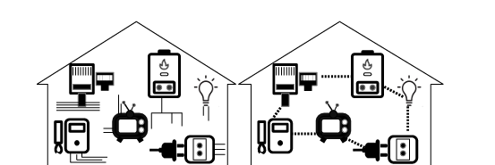
Although connected devices can make household management more convenient, remote control and home automation are not exactly the same. Remote control allows users to operate a device through an interface, such as a mobile application, but the action still depends on a manual command. Home automation goes a step further by allowing selected operations to take place automatically according to schedules, timers, or predefined conditions. These functions can work together, enabling users to retain direct control while automating routine tasks.
The terms smart home and home automation are closely related, but they emphasize different aspects of connected living. A smart home is a broader concept that includes connected devices, monitoring, and intelligent functions intended to improve the home environment. Home automation focuses more specifically on coordinating devices and carrying out selected tasks automatically. Automation can therefore form an important part of a smart home, while a connected device does not necessarily have to operate automatically to be considered part of a smart home system.
The Internet of Things (IoT) supports these capabilities by enabling physical devices to communicate and exchange data through connected hardware and software. Microcontrollers can interact with sensors and switching components, while software interfaces allow users to issue commands and access system information. When these elements are integrated, household devices can be managed as parts of a coordinated system rather than as entirely separate appliances.
Beyond device control, monitoring electrical activity can provide useful information about how household appliances are being used. When relevant usage and energy-related data are available, analyzing them can help users better understand their consumption patterns and identify potential opportunities for more efficient electricity use. AI-assisted analysis can support this process by examining available information and generating recommendations, depending on the data and analysis methods implemented in the system. Such recommendations can help users make more informed decisions about energy consumption, although actual savings depend on how the recommendations are applied and on individual usage patterns.
These concepts provide the foundation for HASS, which integrates device control, automated operations, environmental and electrical monitoring, and AI-assisted analysis within a single home automation system.
1.2 Project Overview
The Home Automation Smart System (HASS) is an integrated home automation solution designed to simplify the control and monitoring of household electrical devices. The system brings appliances such as lights, air-conditioning units, and televisions under a shared platform, allowing users to manage them through a mobile application or a local LCD and push-button interface. By integrating these functions into one system, HASS aims to make household device management more convenient and provide users with greater flexibility in controlling their home environment.
HASS supports several methods of operating connected devices according to the user's needs. Users can manually switch appliances on or off through the Flutter mobile application or the two local push buttons. In addition to direct control, the system supports scheduling operations for specific times, setting timers for delayed or time-limited operation, and configuring If-Then automation based on predefined conditions, including temperature readings. These features allow users to combine manual operation with automated routines rather than relying exclusively on individual manual commands.
The system also incorporates environmental and electrical monitoring to provide information about the conditions in which connected devices operate. Temperature and humidity measurements help monitor the indoor environment, while electrical current monitoring provides information about the electrical activity being measured. In addition to these capabilities, HASS incorporates AI-assisted analysis intended to examine available information about device usage and energy consumption. This analysis aims to identify potential opportunities for more efficient electricity use and provide recommendations that help users make informed decisions about their consumption.
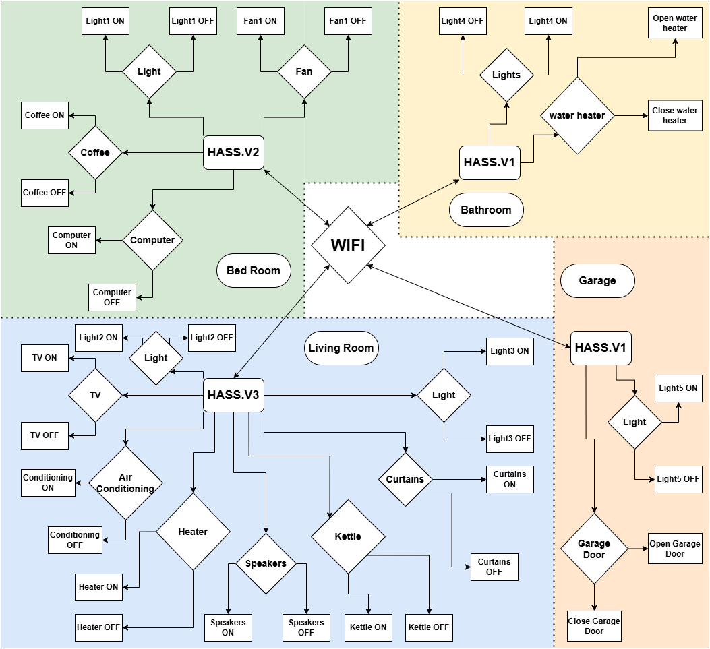
As illustrated by the system layout, HASS consists of four main elements that work together to support its control, communication, and monitoring functions. Each component has a specific role within the overall system, allowing the mobile interface, cloud database, microcontroller, and local LCD display and push buttons to operate as parts of one integrated solution.
The Flutter mobile application provides the main user interface for remote device control and interaction with the system. It allows users to manage connected appliances and access the available control functions through a mobile device. The application also supports account-based access, helping organize user interaction with the system.
Firebase Realtime Database supports cloud-based communication and data exchange between the system's connected components. It provides a shared data layer through which relevant device information and control states can be communicated. This integration helps coordinate commands and system information between the mobile application and the hardware, according to the implemented communication logic.
The ESP32 microcontroller acts as the main hardware controller. It interfaces with the relay modules used to switch connected electrical devices and reads information from the attached sensors. Through these interfaces, the ESP32 carries out the hardware-side functions required for device control, automation, and monitoring. HASS supports both Ethernet and Wi-Fi connectivity, automatically switching to Wi-Fi when an Ethernet connection is unavailable.
A 20×4 character LCD with an I2C interface and two physical push buttons provide a local interface for manually controlling connected devices. The display shows system information, and the push buttons are used to navigate between pages and to select and switch devices ON and OFF. This interface offers an alternative to the mobile application, allowing users to operate appliances locally. Local manual control is particularly useful when Internet connectivity is unavailable, because users can still access the supported local control functions without depending entirely on the cloud-based interface.
For environmental monitoring, HASS uses a DHT22 sensor to measure temperature and humidity. These readings provide information about indoor environmental conditions and can support automation rules that depend on temperature. For electrical monitoring, the system uses four ACS712 current sensor modules, one for each switched load, to monitor electrical current. The measured current is used by the system to calculate and display electrical power readings in watts (W), providing users with information about the power associated with connected loads. This electrical monitoring information helps users better understand the operation of connected appliances.
In addition to its hardware and control functions, HASS incorporates AI-assisted analysis implemented through a Python script. This component is intended to examine available information related to device usage and energy consumption, helping identify patterns or potential opportunities to improve energy efficiency. Based on the implemented analysis, the system can provide recommendations intended to help users make more informed decisions about how and when electrical devices are used. These recommendations are intended to support energy management; actual reductions in electricity consumption or cost depend on user behaviour and how the recommendations are applied.
Together, these components provide the foundation for the main HASS capabilities, including remote and local device control, scheduled and condition-based automation, environmental and electrical monitoring, and AI-assisted energy-related recommendations. The detailed hardware architecture, software implementation, communication mechanisms, and operation of the individual components are presented in the subsequent chapters.
1.3 Problem Statement
Despite the increasing availability of household electrical appliances, managing them efficiently can still present several challenges. Users often need to control devices individually, remember to switch them off when they are no longer needed, and adjust their home environment according to their daily routines. In addition, limited monitoring of device status and electrical activity can make it difficult to identify unnecessary energy consumption.
These challenges highlight the need for an integrated home automation system that combines remote control, automated operation, and monitoring capabilities. HASS addresses these needs through a shared platform that simplifies device management, supports automated routines, and uses AI-assisted analysis to identify potential energy waste and recommend ways to reduce electricity consumption. The main problems addressed by the project and the corresponding HASS solutions are summarized in Table 1.
Table 1: Problems addressed by HASS.
| Problem | Description | How HASS addresses it |
|---|---|---|
| Energy waste | Users may forget to turn off lights or electrical devices, such as air conditioners, when leaving the house, leading to unnecessary energy consumption. | HASS supports remote and automated device control, while AI-assisted analysis examines power consumption data to identify potential energy waste and recommend ways to reduce electricity use. |
| Lack of pre-conditioning | Users may be unable to prepare their home environment, such as cooling or heating, before arriving. | HASS allows supported appliances to be activated in advance through scheduled and automated operation. |
| Managing multiple devices | Each device may require separate manual control, making it inconvenient to manage several appliances. | HASS integrates connected devices into one platform, allowing users to control multiple appliances through a shared interface. |
| Accessibility | Older adults and people with limited mobility may find it difficult to reach physical switches and operate appliances directly. | The mobile application and the local LCD display and push buttons provide alternative ways to control connected devices with minimal physical effort. |
| Limited monitoring and safety risks | Users may find it difficult to verify whether devices have been left on, potentially increasing energy waste and certain household risks. | HASS provides device-status information and monitoring capabilities, helping users check device operation and take action when needed. |
1.4 Objectives
The primary objective of HASS is to provide a practical, cost-effective, and scalable home automation solution that improves user convenience, supports safer device management, and promotes more efficient energy consumption through smart sensors and wireless communication. This objective is divided into the following specific objectives:
- Remote Control: Provide remote monitoring and control of lighting and electrical appliances through an authenticated mobile application.
- High-Power Appliance Support: Support high-power appliances, such as air conditioners, using 30 A relay modules with appropriate cabling and fuse protection.
- Automation: Support scheduling, timers, and If-Then automation, including rules based on temperature readings.
- Local Control: Provide manual control through a 20×4 I2C LCD display and two physical push buttons that remain available when Internet connectivity is lost.
- Environmental and Electrical Monitoring: Monitor indoor temperature and humidity, as well as electrical current, using the DHT22 and ACS712 sensors.
- AI-Assisted Energy Management: Analyze available power consumption data to identify potential energy waste and recommend ways to reduce electricity consumption.
- Scalability: Use a modular design that allows additional devices to be integrated as requirements evolve.
1.5 Project Scope
The project covers the following capabilities:
- Remote Control of Electrical Devices: Users can control lights, air conditioners, televisions, and similar appliances through the mobile application or the local push buttons.
- Scheduling and Automation: Devices can be switched on or off at specified times, through countdown timers, or when predefined conditions, such as temperature thresholds, are met.
- Energy and Environmental Monitoring: The DHT22 sensor measures temperature and humidity, while four ACS712 sensors, one for each load, monitor electrical current.
- AI-Assisted Energy Management: The system analyzes available power consumption data to identify potential energy waste and recommend ways to reduce electricity consumption.
- Device Integration: Independent appliances are managed through a shared platform, providing centralized control of connected devices.
- Local Manual Control: The LCD display and two push buttons allow users to control devices locally, including when Internet connectivity is unavailable.
- Scalability: The modular design allows additional devices to be integrated as user requirements evolve.
1.6 Organisation of the Book
The report is organized into nine chapters. Chapter 2 reviews existing smart home technologies and related commercial products, positioning HASS in comparison with available solutions. Chapter 3 defines the system requirements and use cases. Chapter 4 presents the system architecture, operating modes, and data model. Chapter 5 describes the hardware components, while Chapter 6 explains the software design and implementation. Chapter 7 discusses the authentication and security mechanisms. Chapter 8 presents the testing methodology and results. Finally, Chapter 9 concludes the project and discusses possible future improvements. The appendices provide supporting material, including the project timeline and the ESP32 pin reference.
SUMMARY
Chapter 1 Presented smart-home integration as the context of the project and introduced HASS as a system that brings lighting and appliances under a single platform, controlled through a mobile application or a local LCD and push-button interface. Five problems motivated the work: energy waste, the lack of pre-conditioning, the management of multiple devices, limited accessibility, and limited monitoring and safety risks. Table 1 related to each of them to the way in which HASS addresses it.
The objectives and the scope fixed the capabilities covered by the book: remote control of devices, scheduling and automation, temperature and current monitoring, device integration, local manual control through the LCD and push buttons, and a modular design that allows additional devices to be integrated. Chapter 2 continues by reviewing commercial smart home products in order to position HASS against them.
03Requirements and System Analysis
INTRODUCTION
This chapter turns the objectives of Chapter 1 into a specific description of what HASS is required to do. It identifies the two groups of users and the interface that each group uses, lists the functional requirements of the system, sets out the non-functional requirements and design goals, and illustrates the interaction between the users and the system through a use case diagram and a Level 0 data flow diagram.
The requirements matter because they define the behaviour expected of the system in both connected operation and loss of Internet connectivity, and they provide the reference against which the architecture, hardware and software described in the following chapters can be read.
3.1 Users and Interfaces
HASS has two user interfaces. The mobile application user has an account, and controls and configures devices remotely. The local user operates the LCD display and the two push buttons installed in the home and performs local manual control. Elderly people and people with limited mobility are an important target group for both interfaces.
3.2 Functional Requirements
Table 4: Functional requirements.
| ID | Requirement | Interface |
|---|---|---|
| FR-01 | The user shall be able to create an account and log in to the mobile application. | Mobile app |
| FR-02 | The user shall be able to add a device to one of four slots, give it a name, and assign a category and icon. | Mobile app |
| FR-03 | The user shall be able to switch an individual device on or off. | Mobile app, LCD/buttons |
| FR-04 | The user shall be able to turn all devices on or off with a single action. | Mobile app |
| FR-05 | The user shall be able to create a weekly schedule that switches selected devices on or off at a given time. | Mobile app |
| FR-06 | The user shall be able to set a countdown timer that switches a device on or off when it ends. | Mobile app |
| FR-07 | The user shall be able to define an If-Then rule that acts on a device when the DHT22 temperature meets a condition. | Mobile app |
| FR-08 | The system shall display device states and the measured temperature. | Mobile app, LCD/buttons |
| FR-09 | The system shall measure electrical current with four ACS712 sensors, one for each switched load, to support monitoring. | Hardware |
| FR-10 | The LCD display and two push buttons shall allow the user to configure the Wi-Fi network name and password. | LCD/buttons |
| FR-11 | The system shall provide visual (LED) and audible (buzzer) feedback. | Hardware |
| FR-12 | When Internet connectivity is lost, local manual control through the push buttons shall remain available. | LCD/buttons |
| FR-13 | When Internet connectivity is lost, schedules, timers and If-Then rules shall be unavailable until connectivity is restored. | System |
| FR-14 | When connectivity is restored, the system shall return to connected operation. | System |
| FR-15 | The system shall use Ethernet when it is available and automatically fall back to Wi-Fi when the Ethernet connection is unavailable. This is distinct from the loss of all network or Internet connectivity addressed by FR-12 to FR-14. | System |
| FR-16 | The system shall provide AI-assisted recommendations, produced by a Python-based analysis of available usage and electricity-consumption data, to help identify potential energy waste and reduce unnecessary electricity consumption. | System |
3.3 Non-Functional Requirements
Table 5: Non-functional requirements and design goals.
| Quality | Requirement |
|---|---|
| Usability | Users can control devices with a minimal number of steps. |
| Clarity | Device status is displayed clearly on every screen. |
| Responsiveness | Commands execute quickly with immediate feedback; the recorded average response time is 1.2–1.8 seconds (Chapter 8). |
| Consistency | A uniform design is used across all application screens. |
| Accessibility | The interface takes the needs of elderly users and users with special needs into account. |
| Electrical safety | Mains loads are switched through relay modules that isolate the control circuit; circuits are protected by 10 A and 30 A fuses and wired with appropriately rated cable. |
| Scalability | The modular design allows additional devices and sensors to be integrated. |
3.4 Use Cases
A use case diagram describes the functions that a system offers to its users without describing how they are implemented. Figure 4 presents the use cases of HASS for the two users introduced in Section 3.1, labelled in the figure as Home Owner (Mobile App User) and Home Owner (LCD User). The use cases are colour-coded as Setup, Control and Monitoring, as the legend at the bottom of the figure shows, and the lines drawn from each user indicate the use cases that the user can reach.
The mobile application user can use every function of the system, including account functions. The local user can switch devices on and off locally with the push buttons; this is the use case that remains available when the network is unavailable.
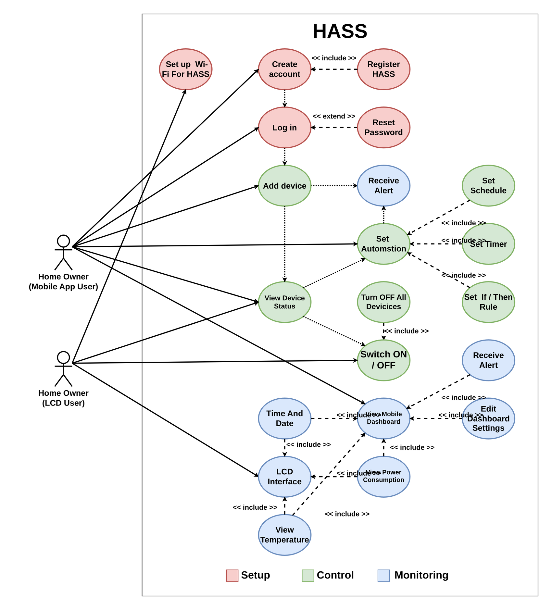
The Setup group covers the account and installation use cases: Create account, which is linked to Register HASS by an «include» relationship, Log in, which is linked to Reset Password by an «extend» relationship, and Set up Wi-Fi for HASS. The Control group covers Add device, View Device Status, Switch ON / OFF, which is linked to Turn OFF All Devices, and Set Automation, which is linked by «include» relationships to Set Schedule, Set Timer and Set If / Then Rule. The Monitoring group covers Receive Alert, View Mobile Dashboard, LCD Interface, Time And Date, View Temperature, View Power Consumption and Edit Dashboard Settings, several of which are linked to the dashboard and to the LCD interface by «include» relationships.
In the figure, the Mobile App User is associated with Create account, Log in, Add device, Set Automation, View Device Status and View Mobile Dashboard, whereas the LCD User is associated with Set up Wi-Fi for HASS, View Device Status, Switch ON / OFF and LCD Interface. Dotted arrows link successive use cases, for example from Create account to Log in, from Log in to Add device, and from View Device Status to Set Automation and Switch ON / OFF, so the diagram can be read from account setup, through device control, to monitoring. It therefore complements the requirement tables of Sections 3.2 and 3.3 by presenting the functions of HASS from the point of view of its users.
The use case “Check the account” corresponds to the profile information shown in the application settings.
3.5 Data Flow Diagram
A data flow diagram describes a system in terms of the data that enter it, the data that leave it and the external elements that exchange them with it. A Level 0 diagram represents the whole system as a single process. Figure 5 shows HASS in this form: the system appears as one process, labelled 0, and the four external elements around it are the mobile application, the LCD, the sensors and the appliances. Whereas the use case diagram of Section 3.4 shows what each user can do, this diagram shows what information passes between HASS and each of these elements.
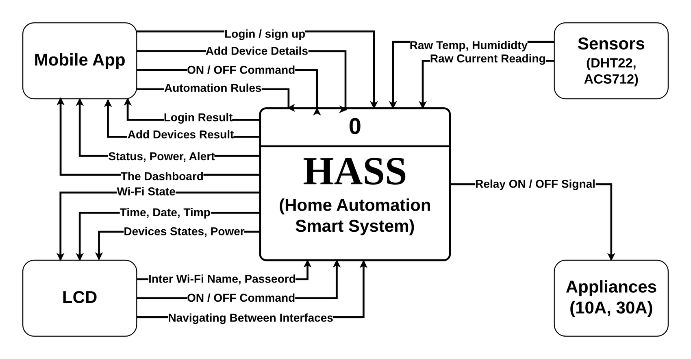
The Mobile App sends login and sign-up data, add-device details, ON / OFF commands and automation rules to HASS, and receives the login result, the add-devices result, status, power and alert data, and the dashboard. The LCD sends the Wi-Fi name and password, ON / OFF commands and navigation between interfaces, and receives the Wi-Fi state, the time, date and temperature, and the device states and power. The Sensors (DHT22 and ACS712) supply raw temperature and humidity and raw current readings to HASS, and HASS sends relay ON / OFF signals to the Appliances (10 A and 30 A).
The figure therefore shows that the mobile application and the LCD exchange data with HASS in both directions, that the sensors only provide input to the system, and that the appliances only receive output from it. It summarises the information boundary of HASS before Chapter 4 presents the internal structure of the system.
SUMMARY
Chapter 3 defined the requirements of HASS from the point of view of its two types of user: the mobile application user, who has an account and controls devices remotely, and the local user, who performs local manual control with the LCD display and push buttons. Elderly people and people with limited mobility were identified as an important target group for both interfaces.
Sixteen functional requirements covered account access, device management in four slots, individual and simultaneous switching, weekly schedules, timers, temperature-based If-Then rules, the display of status and temperature, current measurement with the ACS712 sensor, Wi-Fi configuration through the LCD and push buttons, LED and buzzer feedback, the behaviour of the system when Internet connectivity is lost and restored, Ethernet connectivity with automatic fallback to Wi-Fi, and AI-assisted energy recommendations. The non-functional requirements addressed usability, clarity, responsiveness, consistency, accessibility, electrical safety and scalability, and the use case diagram showed that the local-control use case is the one that remains available without the network. The Level 0 data flow diagram then summarised the data exchanged between HASS and the mobile application, the LCD, the sensors and the appliances. Chapter 4 presents the architecture and design that respond to these requirements.
04System Architecture and Design
INTRODUCTION
This chapter explains how HASS is designed to meet the requirements of Chapter 3. It presents the design as a closed-loop control system made of input units, a processing unit and output units, and then describes the architecture in which the mobile application and the ESP32 communicate through a Firebase Realtime Database while the LCD display and the two push buttons are connected to the ESP32 directly.
The chapter continues with the two operating modes of the system, connected operation and offline operation, and compares the functions available in each. It then describes the six-step working principle that governs every command, the organisation of the cloud database and its data model, and finally the power supply and the electrical safety measures of the design. Together these topics form the design basis for the hardware and software chapters that follow.
4.1 Design Overview
HASS is designed as a closed-loop control system with three groups of elements: input units, a processing unit and output units. The inputs are the mobile application, the two push buttons, the DHT22 temperature and humidity sensor and the four ACS712 current sensors. The ESP32 microcontroller is the processing unit. The outputs are the relay modules that switch the appliances, together with LED indicators, a buzzer and the LCD display. A feedback path returns device status to the user, so that the state shown always reflects the action taken. In addition to this control loop, HASS includes an AI-assisted analysis function, implemented as a Python script, which examines available usage and electricity-consumption data to identify potential energy waste and to provide recommendations for reducing unnecessary consumption. These recommendations support energy management; any reduction in consumption depends on how the user applies them.
4.2 System Architecture
Figure 6 presents the architecture. The mobile application and the ESP32 are both clients of a Firebase Realtime Database; the ESP32 reaches it through the home network and the Internet, using Ethernet when it is available and falling back automatically to Wi-Fi when the Ethernet connection is unavailable. The 20×4 LCD display is connected directly to the ESP32 through the I2C interface and the two push buttons are read directly on ESP32 input pins, so the local interface does not depend on the network. The W5500 Ethernet module is connected to the ESP32 through the SPI interface. The ESP32 drives the relay modules that switch the appliances, reads the DHT22 sensor and the four ACS712 sensors, and operates the LED indicators and the buzzer.
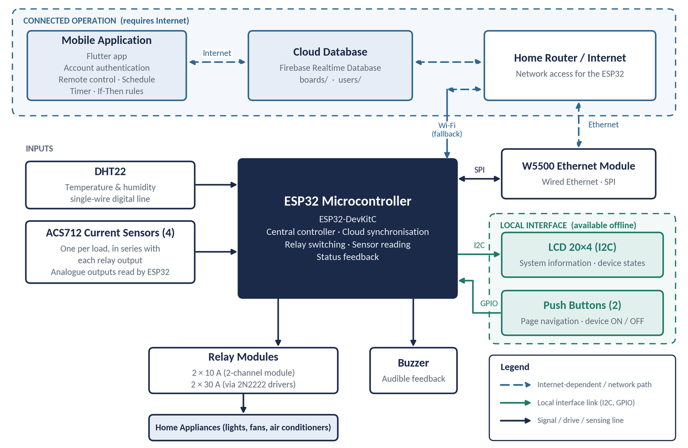
Table 6 lists the architectural components, their roles and the interface each one uses.
Table 6: Architecture summary: components, roles and interfaces.
| Component | Role | Interface |
|---|---|---|
| Mobile application (Flutter) | User interface for remote monitoring and control; account access | Internet connection to Firebase Realtime Database |
| Firebase Realtime Database | Cloud storage and real-time synchronisation of device data between the application and the ESP32 | Internet |
| ESP32 microcontroller | Central controller: relay switching, sensor reading, cloud synchronisation, status feedback | Ethernet when available (W5500 module over SPI), with automatic Wi-Fi fallback; GPIO; I2C to LCD |
| LCD 20×4 display (I2C) | Local display of system information and device states | I2C (SDA/SCL) to ESP32 |
| Push buttons (2) | Page navigation; selecting and switching devices ON and OFF locally | Digital GPIO inputs to ESP32 |
| W5500 Ethernet module | Wired Ethernet connection to the home network | SPI to ESP32 |
| Relay modules (2 × 10 A, 2 × 30 A) | Switch 220 V AC appliances using low-voltage signals | Digital GPIO signals from ESP32 (30 A relays through 2N2222 drivers) |
| DHT22 sensor | Temperature and humidity measurement | Single-wire digital interface |
| ACS712 current sensors (four) | Electrical current measurement for monitoring | |
| LED indicators and buzzer | Visual and audible feedback | Digital GPIO outputs |
4.3 Operating Modes
4.3.1 Connected operation
When network connectivity (Ethernet or Wi-Fi) and Internet connectivity are available, the system operates in connected mode. The mobile application and the ESP32 synchronise through the cloud database, the application can control devices from any location, and the automation functions (schedules, timers and If-Then rules) are available. The LCD display and the push buttons continue to provide manual control and status display. The ESP32 uses Ethernet when it is available and falls back automatically to Wi-Fi when the Ethernet connection is unavailable; in either case, connected operation applies while Internet connectivity is available.
4.3.2 Offline operation
When all network or Internet connectivity is lost, the user can still control the devices manually with the two physical push buttons, using the LCD display connected to the ESP32. The cloud-dependent functions (schedules, timers, If-Then automation and remote control from the mobile application) are unavailable until connectivity is restored. Offline operation is therefore a fallback for manual control and not a complete local replacement of the system. The loss of the Ethernet connection alone is a different situation: the ESP32 falls back automatically to Wi-Fi, so offline operation applies only when neither Ethernet nor Wi-Fi provides Internet connectivity.
Table 7: Availability of functions in connected and offline operation.
| Function | Connected operation | Offline operation |
|---|---|---|
| Manual ON/OFF with the push buttons | Available | Available |
| Remote control from the mobile application | Available | Unavailable |
| Weekly schedules | Available | Unavailable |
| Timers | Available | Unavailable |
| If-Then rules | Available | Unavailable |
| Cloud synchronisation of device data | Available | Unavailable |
| Return to connected operation | — | Occurs when connectivity is restored |
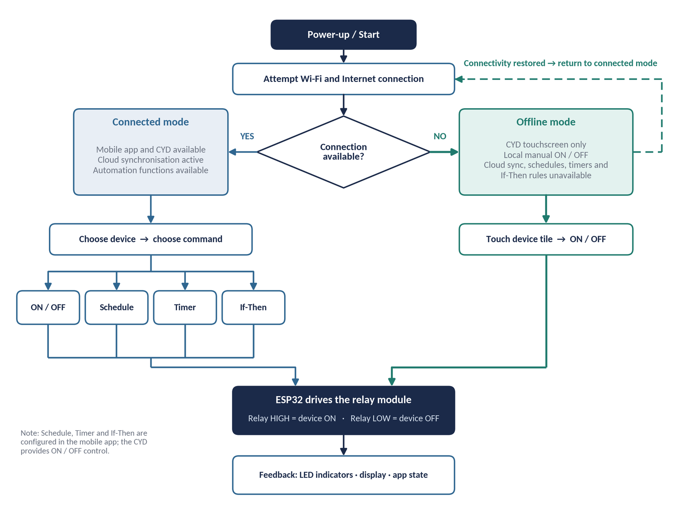
4.4 Working Principle
The system operates as a continuous cycle of six steps:
- User command. The user requests an action, such as turning on the air conditioner, from the mobile application or from the local push buttons. Commands from the application reach the ESP32 through the cloud database; commands from the push buttons are read directly by the ESP32.
- Read. The ESP32 receives the command and reads the status of the connected devices and sensors.
- Process. The ESP32 interprets the request and the sensor readings.
- Decide. Control logic determines the action. Examples are: if the user requests “AC ON”, activate the AC relay channel; if the temperature reaches 30 °C, turn on the air conditioner (If-Then rule); if the scheduled time is reached, execute the scheduled task.
- Act. Control signals are sent to the relay modules, which switch the targeted appliances, and the device state is updated.
- Feedback. The new state is shown on the mobile application and the LCD display, and the LED indicators confirm it. The cycle then returns to step 1.
The six steps can also be followed as messages exchanged between the components of the system. Figure 8 expresses the same cycle as a sequence diagram with five lifelines (User, Mobile App, Cloud, ESP32 and Relays), divided by dashed lines into four scenarios: ON / OFF, Timer, Schedule and IF / THEN.
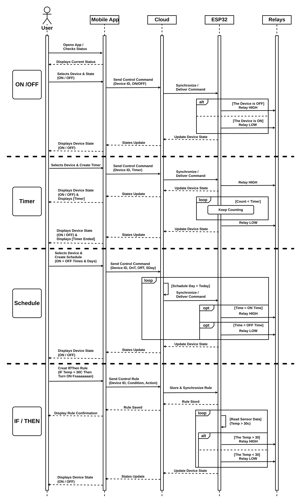
In every scenario the interaction starts with the user’s selection in the Mobile App, which sends a control command to the Cloud (a control rule in the IF / THEN scenario). The Cloud delivers it to the ESP32, which acts on the Relays and sends an Update Device State message back to the Cloud; the Cloud then returns a States Update to the Mobile App, which displays the resulting device state to the user. Solid arrows represent commands and dashed arrows represent returned state or confirmation messages.
The framed fragments show the conditions under which the ESP32 acts. In ON / OFF, an alternative fragment sends Relay HIGH or Relay LOW according to the state of the device. In Timer, the relay is set HIGH, a loop keeps counting while the count is below the timer, and the relay is then set LOW when the timer ends. In Schedule, a loop runs while the schedule day is today, and optional fragments set the relay HIGH at the ON time and LOW at the OFF time. In IF / THEN, the rule is first stored and synchronised and a confirmation is shown to the user; a loop then reads the sensor data, and an alternative fragment sets the relay HIGH or LOW depending on whether the temperature is above or below 30. Taken together, the diagram makes visible which component handles each part of the cycle and how the new state returns to the user along the same path.
4.5 Cloud Database and Data Model
The system uses the Firebase Realtime Database [13], a cloud-based NoSQL database that stores data as a hierarchy of JSON nodes and synchronises it in real time between the IoT devices and the mobile application. The two top-level nodes are boards/ and users/. Each board represents one physical ESP32-based system and is identified by a generated identifier.
4.5.1 Board identification
Each board identifier consists of 18 characters, each of which may be an uppercase letter (26 possibilities), a lowercase letter (26) or a digit (10), giving 62 possible characters per position. The number of possible identifiers is therefore:
6218 ≈ 1.83 × 1032
A key space of this size makes accidental duplication between boards practically impossible and makes identifiers impractical to guess.
4.5.2 Board node structure
Each board node (boards/{board Id}) contains four sub-nodes, shown in Figure 9 and described in Table 8.
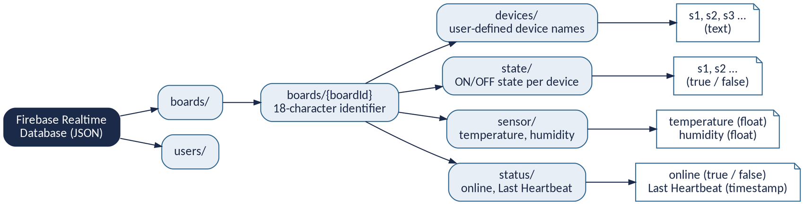
Table 8: Sub-nodes of a board in the database.
| Node | Content | Purpose |
|---|---|---|
| devices/ | User-defined device names (s1, s2, s3 …) | Allows dynamic labelling of devices from the mobile application |
| state/ | Current ON/OFF state of each device (true / false) | Real-time control and synchronisation |
| sensor/ | Temperature and humidity (float values) | Environmental readings updated periodically by the microcontroller |
| status/ | online (true / false); Last Heartbeat (timestamp) | Lets the system detect whether the board is active |
4.6 Power Supply and Electrical Safety
A regulated power supply converts the 220 V AC mains to 5 V DC for the ESP32 control circuit. Home appliances operate at 220 V AC and are controlled exclusively through the relay modules. The design incorporates the following safety measures:
- Electrical isolation. The relay modules provide galvanic isolation between the low-voltage control circuit (3.3 V / 5 V DC) and the mains circuit (220 V AC).
- Overcurrent protection. Dual fuses (10 A for the low-load circuit and 30 A for the high-load circuit) protect the appliances and the control electronics.
- Wiring and grounding. Cable of appropriate cross-section (4 mm² on high-current paths) and proper earthing support safe and thermally stable operation.
- Reduced manual handling. Remote and local push-button control reduce the need to handle electrical devices directly.
SUMMARY
Chapter 4 presented HASS as a closed-loop control system in which the mobile application, the push buttons, the DHT22 and the four ACS712 sensors act as inputs, the ESP32 acts as the processing unit, and the relay modules, indicators, buzzer and displays act as outputs. The mobile application and the ESP32 are both clients of a Firebase Realtime Database, whereas the LCD display and the push buttons are connected directly to the ESP32 and therefore do not depend on the network. Table 6 summarised the components, their roles and their interfaces. The design also includes an AI-assisted analysis function, implemented as a Python script, which provides recommendations for reducing unnecessary electricity consumption.
The chapter defined connected operation, in which remote control and the automation functions are available, and offline operation, in which only manual control with the push buttons remains available, so that offline operation is a fallback and not a complete local replacement of the system. It distinguished the loss of the Ethernet connection, which is handled by an automatic fallback to Wi-Fi, from the loss of all network or Internet connectivity. It described the six-step working principle, the database structure with the boards/ and users/ nodes, the 18-character board identifier and the devices/, state/, sensor/ and status/ sub-nodes of a board, and the power supply and safety measures: relay isolation, 10 A and 30 A fuses, and 4 mm² cable on high-current paths. Chapter 5 describes the hardware that implements this design.
05Hardware Design
INTRODUCTION
This chapter documents the hardware of HASS. It lists the components used and their functions, and then describes how the ESP32 is connected to the network (by Ethernet or Wi-Fi) and to the LCD 20×4 display and the two push buttons that form the local interface, how the relay modules and fuses switch and protect the appliances, which sensors supply measurements, and how the LED indicators and the buzzer give feedback.
The chapter closes with the assignment of ESP32 pins and the wiring diagram of the prototype. Its purpose is to show how the architecture of Chapter 4 is realised physically, including the arrangement that allows high-power appliances to be switched through 30 A relay modules.
5.1 Hardware Components
Table 9: Hardware components of HASS.
| Image | Component | Function in HASS |
|---|---|---|
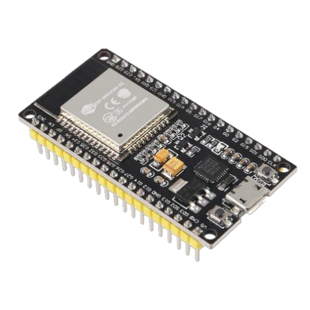 | ESP32 microcontroller (ESP32-DevKitC) [10] | Central controller of the project; provides Wi-Fi and Bluetooth connectivity, switches the relays and reads the sensors. |
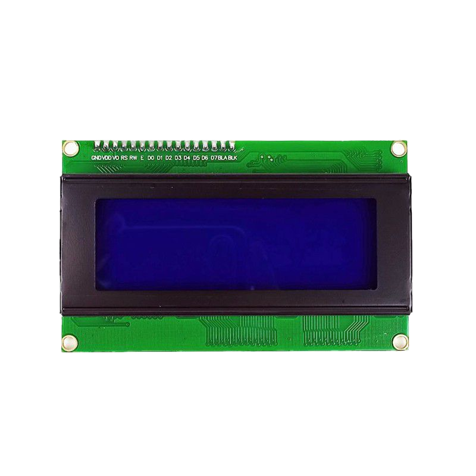 | LCD 20×4 I2C display | Character display (20 columns × 4 rows) with an I2C interface, used to display system information and device states. Connected to the ESP32 through the I2C pins (SDA and SCL). |
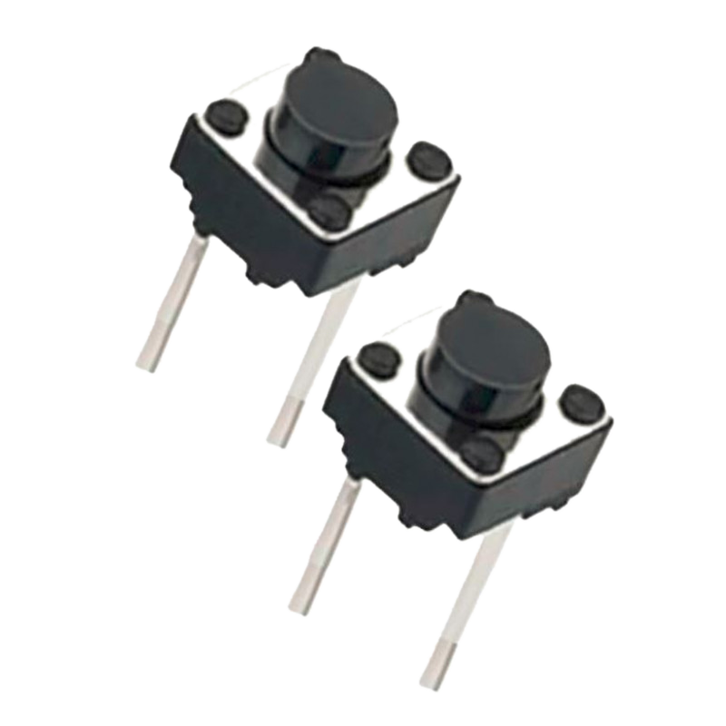 | Push buttons (two) | Used for page navigation and for selecting and controlling devices, including switching devices ON and OFF locally. |
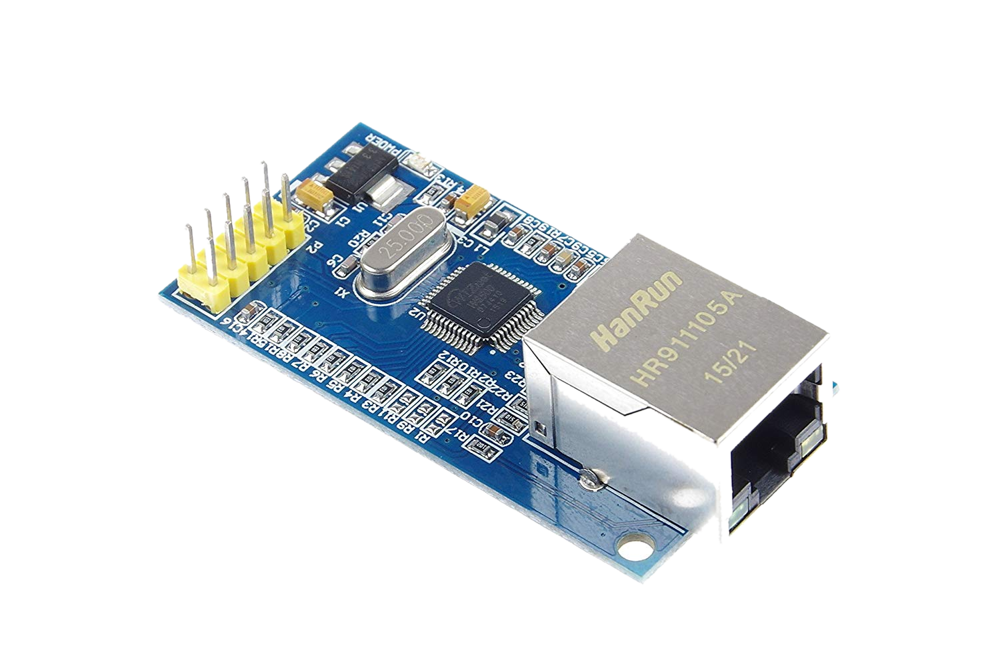 | W5500 Ethernet module [11] | Provides wired Ethernet connectivity for the ESP32 over the SPI interface. |
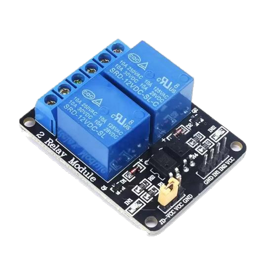 | Two-channel 10 A relay module | Controls two electrical devices (low-power loads such as lighting); lets the microcontroller switch devices on and off safely. |
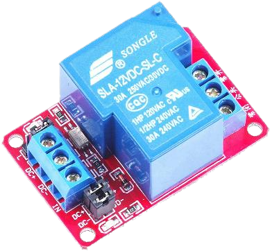 | 30 A relay module (two units) | Each module controls one high-power device, such as an air conditioner. Driven from the ESP32 through a 2N2222 transistor and a 220 Ω resistor. |
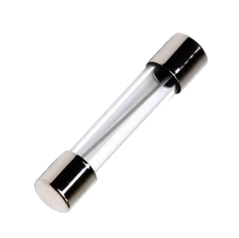 | Fuses (10 A and 30 A) | Protect the low-load and high-load circuits from excessive current; the fuse melts and opens the circuit when current is too high. |
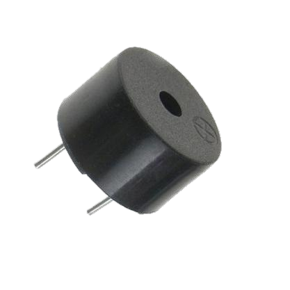 | Buzzer | Produces an audible signal for command feedback, alerts and notifications. |
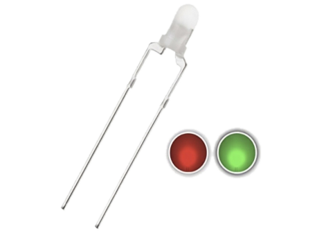 | LED indicators | Provide visual status feedback; green indicates device ON or system OK, red indicates an error or device OFF. |
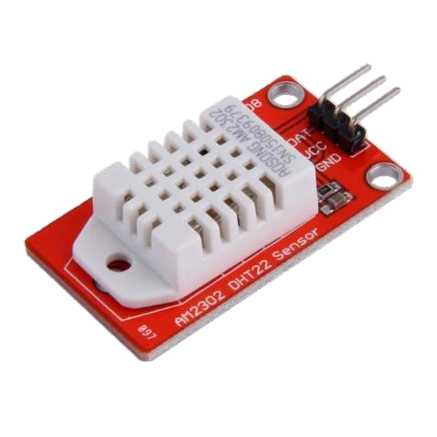 | DHT22 sensor | Measures temperature and humidity and sends the data to the microcontroller. |
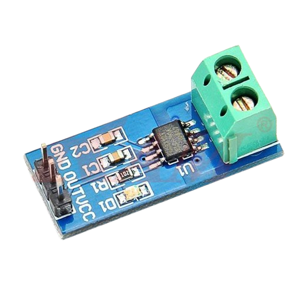 | ACS712 current sensors (four) [12] | Four modules of the same model, one assigned to each load (30 A, 30 A, 10 A and 10 A nominal load ratings); measure electrical current to support monitoring. |
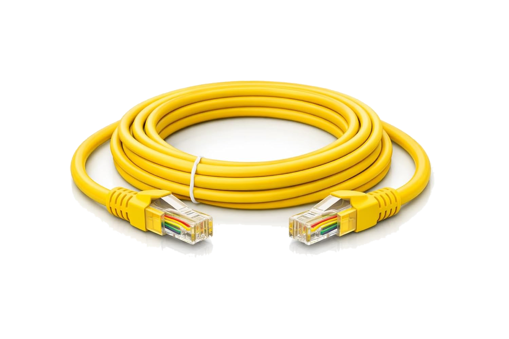 | Ethernet cable | Provides wired network connectivity to HASS when available, with automatic fallback to Wi-Fi when the Ethernet connection is unavailable. |
5.2 ESP32, LCD 20×4 Display and Push Buttons
The ESP32 (32-bit dual-core Xtensa processor running at 240 MHz, with 2.4 GHz Wi-Fi and Bluetooth) is the central unit of the hardware. The local interface consists of a 20×4 character LCD with an I2C interface and two physical push buttons. The LCD is connected to the I2C pins of the ESP32, SDA on GPIO21 and SCL on GPIO22, in addition to power and ground. The two push buttons are used to navigate between the display pages and to select and control devices, including switching them ON and OFF. Because the display and the buttons are wired directly to the ESP32, the local interface does not depend on the network, which is what makes offline manual control possible. For network connectivity, the ESP32 uses wired Ethernet through a W5500 module connected over SPI (MOSI on GPIO23, MISO on GPIO19, SCLK on GPIO18, CS on GPIO5 and RST on GPIO4) when it is available, and falls back automatically to Wi-Fi when the Ethernet connection is unavailable. This concerns only the network link of the ESP32; the LCD and the push buttons do not depend on either network connection.
5.3 Switching and Protection Circuitry
The appliances are switched by relay modules. Two channels of a 10 A module serve low-power devices such as lights, and two 30 A modules serve high-power devices such as air conditioners; the design targets air conditioners up to 2.25 HP. The two 30 A relays are driven from ESP32 pins through 2N2222 transistors, each with a 220 Ω resistor in series with the GPIO output. Each relay output circuit is protected by a fuse, and high-current paths use 4 mm² cable. Figure 10 shows a typical connection of a high-load appliance through a 30 A relay module.
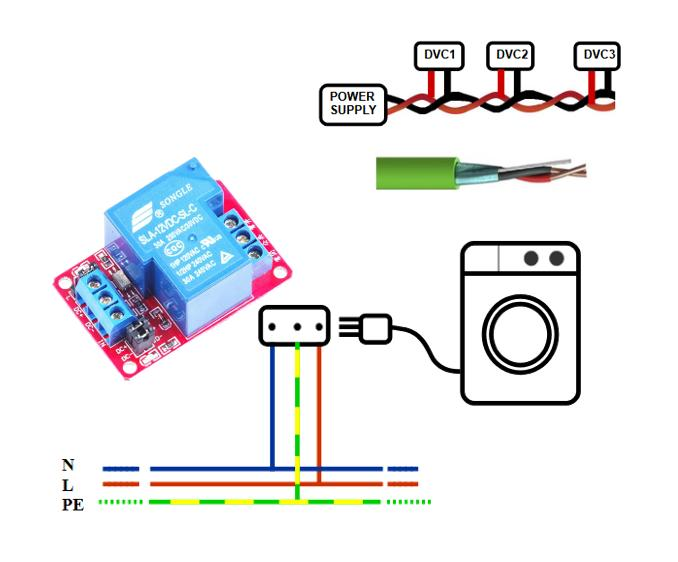
5.4 Sensing
A DHT22 sensor provides temperature and humidity readings; its data line is connected to GPIO32. The temperature is shown in the mobile application and is the input of the If-Then rule; both values are stored in the sensor/ node of the database. Electrical current is measured by four ACS712 current sensor modules of the same model, each assigned to a separate load. The nominal ratings of the loads are 30 A, 30 A, 10 A and 10 A; these are the ratings of the loads and do not define the measurement range of the ACS712 modules. Each module is connected in series with the output of one relay channel, and its analogue output is read by the ESP32. The measured current is used to calculate and display electrical power in watts (W). Functional tests of the ACS712 sensors were successful; no numerical measurements are reported in this document.
5.5 Indicators
LED indicators and a buzzer give feedback. Green LEDs indicate that a device is on or that the system is operating normally; red indicates an error or an OFF state. The buzzer is connected to GPIO13 in Figures 11 and 12 and produces audible feedback for commands and alerts. The LEDs are not drawn in Figures 11 and 12, so their GPIO assignment is not documented in this version.
5.6 Pin Assignment and Wiring
Table 10: ESP32 GPIO assignment.
| Function | ESP32 GPIO |
|---|---|
| LCD 20×4 (I2C): SDA | GPIO21 |
| LCD 20×4 (I2C): SCL | GPIO22 |
| Push button S1 | GPIO35 † |
| Push button S2 | GPIO34 † |
| 2-channel relay module: IN1 (channel 1) | GPIO26 † |
| 2-channel relay module: IN2 (channel 2) | GPIO25 † |
| 30 A relay KF-2 (via transistor Q2 and resistor R1) | GPIO27 |
| 30 A relay KF-1 (via transistor Q3 and resistor R2) | GPIO14 |
| W5500: MOSI | GPIO23 |
| W5500: MISO | GPIO19 |
| W5500: SCLK | GPIO18 |
| W5500: CS | GPIO5 |
| W5500: RST | GPIO4 |
| DHT22 data | GPIO32 |
| ACS712 output (module on KF-1) | GPIO33 † |
| ACS712 output (module on KF-2) | GPIO36 † |
| ACS712 output (module on relay channel 1) | GPIO16 † |
| ACS712 output (module on relay channel 2) | GPIO17 † |
| Buzzer | GPIO13 † |
| LED indicators | Not shown in Figures 11 and 12; to be confirmed |
The pin assignments in the table above are taken from the source files of the circuit diagrams in Figures 11 and 12. Entries marked † require confirmation against the firmware and the physical wiring by the project owner.
The breadboard diagram of Figure 11 uses the colour code of Table 11.
Table 11: Wire colour code used in the wiring diagram.
| Colour | Usage |
|---|---|
| VCC (power) | |
| GND (ground) | |
| Relay control signals (2-channel module inputs) and fused relay-output connections | |
| DHT22 data, transistor-driver signals, buzzer signal and W5500 CS | |
| ACS712 outputs and W5500 SCLK | |
| I2C SCL and W5500 RST | |
| I2C SDA | |
| W5500 MOSI and push-button signals | |
| W5500 MISO |
Figure 11 shows a breadboard view of the circuit and Figure 12 shows the corresponding schematic. The schematic labels an ESP32 module (U2), a 2-channel relay module (A1), two SRD-05VDC-SL-C relay modules (KF-1 and KF-2), transistors Q2 and Q3 with 220 Ω resistors R1 and R2, a DHT22 sensor (A2), a buzzer (J1), a W5500 module (A3), an LCD2004 I2C display, push buttons S1 and S2, four ACS712 current-sensor boards (Part1, Part2, Part5 and Part6), four bulbs (BULB1 to BULB4) that represent the loads, fuses F1 to F4, an AC/DC power supply module (Mod1) and a power plug.
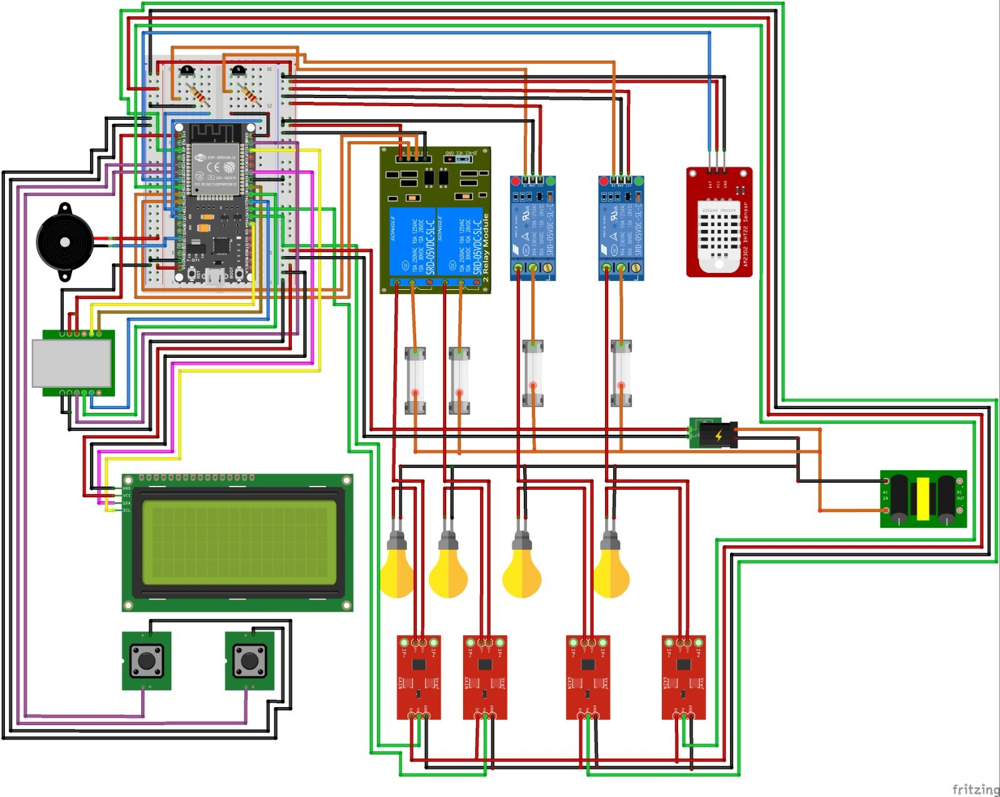
The circuit design is presented using two complementary views to provide a clearer understanding of the hardware implementation. The breadboard diagram illustrates the physical arrangement and wiring connections between the main components, while the schematic diagram provides a symbolic representation of the electrical connections and component relationships. Together, these diagrams offer both a practical wiring reference and an overview of the circuit structure.
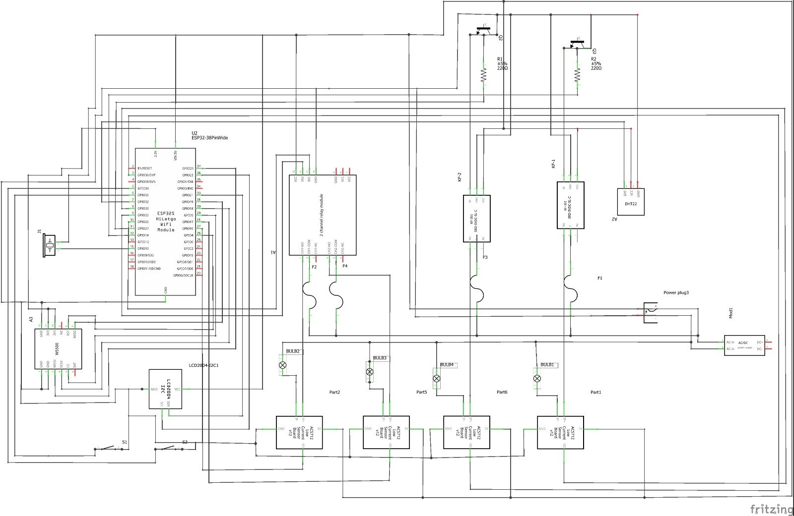
SUMMARY
Chapter 5 documented the hardware of HASS. The ESP32-DevKitC is the central controller and is connected to a 20×4 I2C LCD display (GPIO21 and GPIO22) and to two push buttons, which keep local control working when the network is unavailable. Appliances are switched by a two-channel 10 A relay module for low-power loads and by two 30 A relay modules, driven through 2N2222 transistors, for high-power loads, with fuses in the relay output circuits and 4 mm² cable on high-current paths; the design targets air conditioners up to 2.25 HP. The ESP32 uses Ethernet when it is available and falls back automatically to Wi-Fi when the Ethernet connection is unavailable. Electrical current is measured by four ACS712 sensors, one for each load.
The DHT22 supplies temperature and humidity readings, and the ACS712 was added to measure the electrical current used to calculate electrical power (W) for monitoring. LED indicators and a buzzer provide feedback. Table 10 gave the GPIO assignment, Table 11 the wire colour code, and Figure 11 the breadboard wiring diagram of the circuit. Chapter 6 turns from the physical system to the software that controls it.
06Software Design and Implementation
INTRODUCTION
This chapter describes the software of HASS and records how much of the intended functionality has been implemented. It first presents the three software parts of the system, namely the Flutter mobile application, the local LCD and push-button interface and the ESP32 control program, and then treats the mobile application in detail: its structure and navigation, its screens, and the design goals and colour palette of its interface.
The remaining sections cover the LCD interface and local control (including the earlier CYD prototype interface), the three automation functions (schedule, timer and If-Then rule), and the monitoring and feedback provided to the user, including the AI-assisted energy analysis. The chapter ends with an implementation status table that separates the features that are implemented from those that are only designed or proposed, so that the reader can distinguish the present system from planned work.
6.1 Software Overview
The software of HASS has three parts: the mobile application, built with Flutter, which provides remote access after the user logs in; the local LCD and push-button interface, which provides local manual control and status display; and the ESP32 control program, which communicates with the database, switches the relays, reads the sensors and drives the LCD display over I2C and reads the two push buttons. The cloud database that links the application and the ESP32 is described in Section 4.5. The AI-assisted energy analysis, implemented as a Python script, is described with the monitoring functions in Section 6.5.
6.2 Mobile Application
6.2.1 Structure and navigation
The application opens with a splash screen followed by the login and account-creation screens. After login the user reaches the home screen, from which the add-device, device-details and settings screens are reached through the bottom bar and the navigation menu. Figure 13 shows the wireframes prepared during design, and Table 12 summarises each screen.
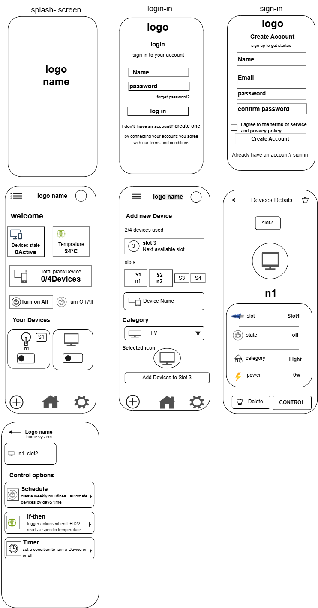
Table 12: Screens of the mobile application.
| Screen | Main elements | Function |
|---|---|---|
| Create Account | Name, email, password, confirm password, terms checkbox | Registers a new user |
| Login | Name, password, forgotten-password link | Authenticates the user |
| Home | Welcome message, devices state, temperature, total devices, Turn On All / Turn Off All, device cards with switches | Overview and quick control |
| Add New Device | Slot selection (up to four), device name, category, icon | Registers a device in a slot |
| Device Details | Slot, state, category, power, Delete, Control | Shows a device and opens its control options |
| Control Options | Schedule, If-Then, Timer | Entry to the automation functions |
| Schedule / Timer / If-Then | Parameters described in Section 6.4 | Creates automations |
| Settings | Profile, language (English or Arabic), dark mode, profile picture | Application preferences |
| Navigation menu | Home, Device Details, Add Device, Settings, Logout | Navigation and logout |
6.2.2 Account and home screens
Figure 14 shows the account-creation, login and home screens. The home screen greets the user by name and shows the number of active devices, the current temperature, the number of devices in use out of four, the Turn On All and Turn Off All buttons, and a card with a switch for every registered device.
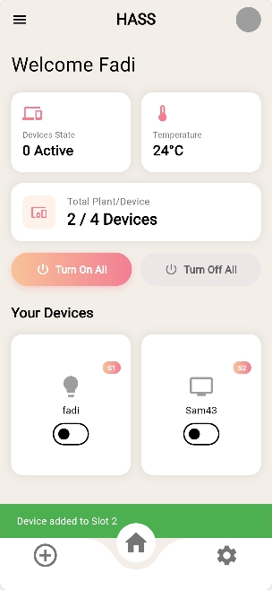
6.2.3 Device management and settings
Devices are added from the Add New Device screen, which offers the next available slot, a name field, a category list and an icon. Figure 15 shows the navigation menu, the add-device screen and the settings screen, where the user can change the language, switch dark mode and set a profile picture.
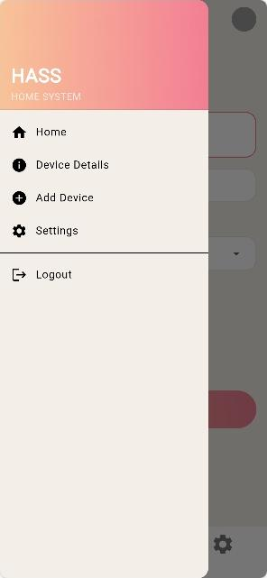
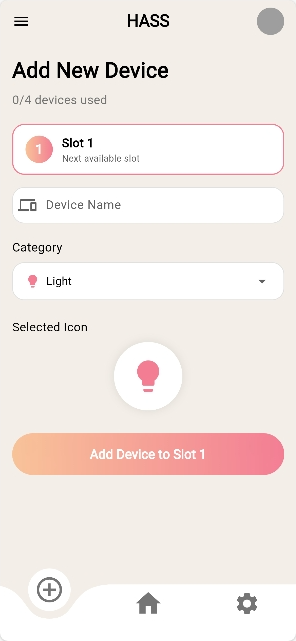
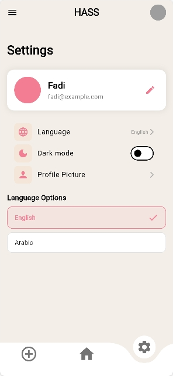
6.2.4 Device details and automation screens
The Device Details screen (Figure 16) shows the slot, state, category and power of a device, and the CONTROL button opens the Control Options screen with the Schedule, If-Then and Timer functions. Figure 17 shows the three automation screens in dark mode.
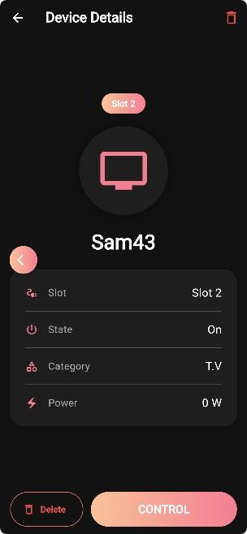
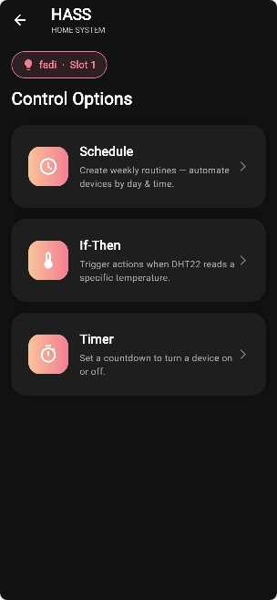
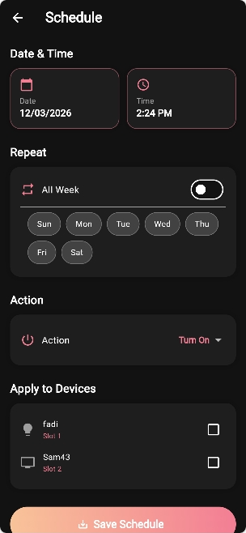
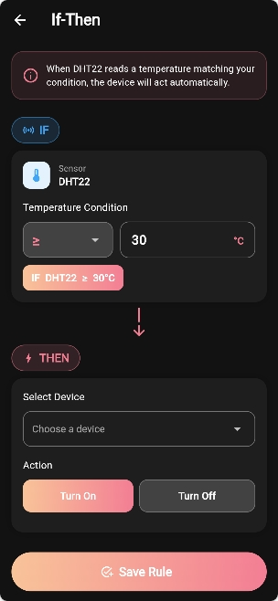
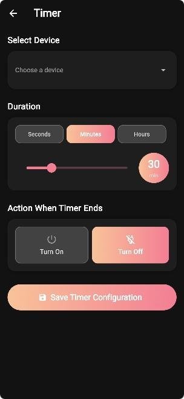
6.2.5 Interface design and colour palette
The interface was designed around five goals: usability (control devices in few steps), clarity (clear device status), responsiveness (fast command execution with feedback), consistency (uniform design across screens) and accessibility (consideration for elderly users and users with special needs). The colour palette of Table 13 supports these goals.
Table 13: Colour palette of the mobile application.
| Code | Colour | Name | Usage |
|---|---|---|---|
| #F8C399 | Warm peach | Buttons, interactive elements and key highlights such as the welcome screen and device cards; gives a warm, inviting feel. | |
| #D4C8BB | Soft taupe / beige | Borders, secondary text, icons and card backgrounds; a neutral, stable appearance that supports readability. | |
| #F37E94 | Magenta-pink | Alerts, highlights and important actions such as Turn All On/Off. | |
| #F3EEE8 | Blush off-white | Primary background in light mode; calm, spacious interface that reduces eye strain. | |
| #F3F3F3 | Light grey | Card backgrounds, disabled elements and subtle sections; adds visual layering. |
6.3 LCD Interface and Local Control
In the final hardware, local control is provided by the 20×4 I2C LCD and two physical push buttons connected directly to the ESP32 (Section 5.2). The LCD displays system information and device states, including the temperature (Section 6.5), and the push buttons are used to navigate between pages and to select and switch devices ON and OFF. Because the display and the buttons do not depend on the network, manual control remains available when network or Internet connectivity is lost (Section 4.3.2). The screenshots in Figure 18 and Figure 19 are retained as a record of the earlier CYD touchscreen prototype, which this interface replaced.
The CYD touchscreen provided local manual control in the earlier prototype and has been replaced in the final hardware by the LCD and push buttons described above. Figure 18 shows the screen design of the CYD interface. The home screen shows the Wi-Fi status indicator, the date and time and a temperature gauge; the home button opens a screen with one tile per device (ON or OFF), and the settings button opens the configuration screens. The design also defines a device screen with an ON/OFF state, and a settings screen with language, Bluetooth, brightness and theme options.
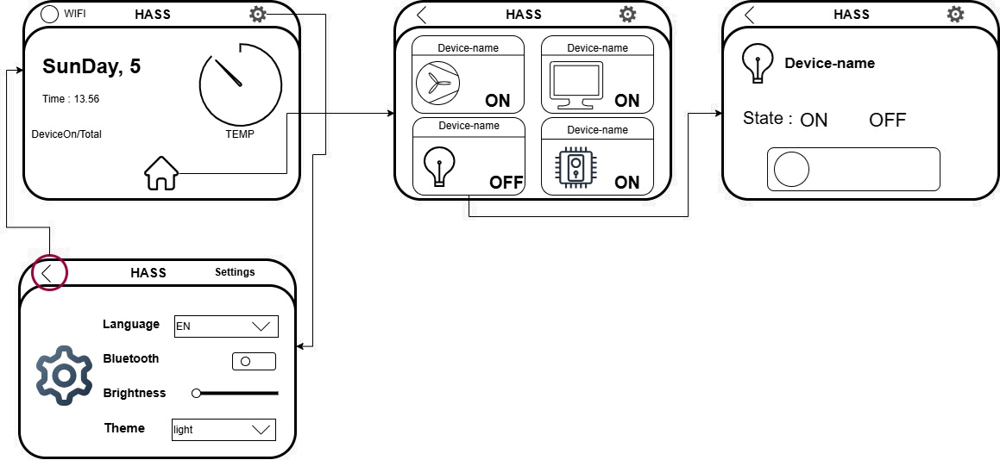
Figure 19 shows the screens implemented on the CYD: the home screen, the device-tile screen and the Wi-Fi setup screen, on which the user enters the Wi-Fi name and password with an on-screen keyboard. On the CYD, touching a device tile switched the device and was the action that remained available when the Internet was lost.
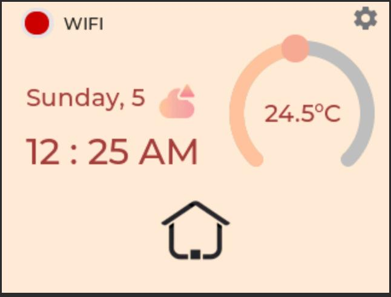
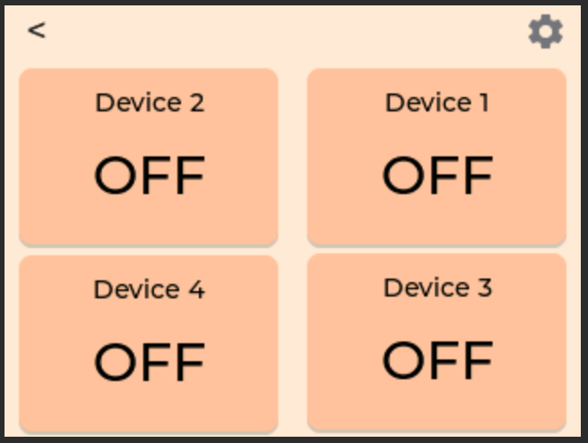
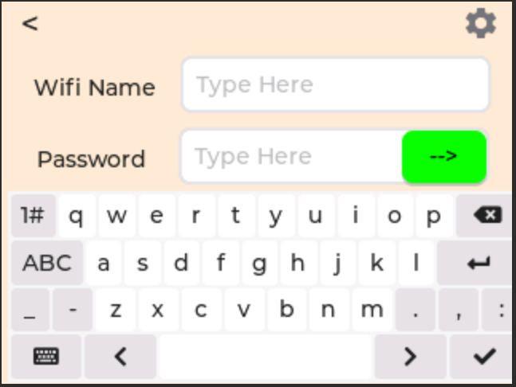
6.4 Automation Functions
Three automation functions are configured from the Control Options screen of the mobile application. They are available in connected operation and are unavailable while connectivity is lost (Section 4.3). Table 14 lists their parameters.
Table 14: Automation functions and their parameters.
| Function | Parameters set by the user | Behaviour |
|---|---|---|
| Schedule | Date and time; repeat (all week or selected days Sun–Sat); action (Turn On or Turn Off); devices to apply to | Switches the selected devices at the configured time; used to create weekly routines. |
| Timer | Device; duration (seconds, minutes or hours); action when the timer ends (Turn On or Turn Off) | Starts a countdown and applies the chosen action when it ends. |
| If-Then | IF: DHT22 temperature condition (comparison operator and value in °C); THEN: device and action (Turn On or Turn Off) | Acts on a device automatically when the temperature meets the condition, for example when it reaches 30 °C. |
6.5 Monitoring and Feedback
The microcontroller reads the DHT22 sensor and updates the temperature and humidity values in the database periodically; the temperature is displayed on the application home screen and on the LCD display. The status/ node holds an online flag and a Last Heartbeat timestamp that allow the system to detect whether a board is active. Feedback to the user is given by the LED indicators, the buzzer, and the on-screen state of every device. The ACS712 sensor measures electrical current, which the system uses to calculate and display electrical power in watts (W), supporting the monitoring of electrical consumption.
The AI-assisted energy analysis is implemented as a Python script. It analyses the available usage and electricity-consumption data to identify potential energy waste and provides recommendations for reducing unnecessary electricity consumption. The recommendations support energy management; this report does not record measured savings, and any reduction in consumption depends on how the user applies them.
6.6 Implementation Status
Table 15: Implementation status of HASS features.
| Feature | Evidence | Status |
|---|---|---|
| Account creation and login | Application screens | Implemented |
| Adding, naming and categorising devices (four slots) | Application screens | Implemented |
| Device ON/OFF; Turn On All / Turn Off All | Application screens; test record | Implemented |
| Schedule, timer and If-Then configuration | Application screens; test record | Implemented (connected operation only) |
| DHT22 temperature and humidity monitoring | Hardware; database structure; screens | Implemented |
| English / Arabic language and dark mode in the application | Application screens | Implemented |
| CYD home, device and Wi-Fi setup screens (earlier prototype) | Screen captures | Implemented in the earlier prototype (superseded by the LCD) |
| LCD 20×4 I2C display and two push buttons (local interface) | Figures 11 and 12; confirmed hardware update | Implemented |
| Local manual control without Internet | Implemented; test result to be recorded | |
| ACS712 current sensing (four modules, one per load) | Confirmed hardware update | Included in hardware; details pending |
| Ethernet connectivity with automatic fallback to Wi-Fi | Hardware component list | Implemented; no test result recorded |
| AI-assisted energy analysis (Python script) | Python analysis script | Implemented; no test result recorded |
| CYD device screen, language, Bluetooth, brightness and theme settings (earlier prototype) | Design diagram only | Designed (earlier prototype only) |
| Push notifications for abnormal conditions | Proposed | |
| Error detection for sensors and relays with alerts | Proposed | |
| Low-power sleep modes | Proposed | |
| Data logging for historical analysis | Described as optional | Proposed |
SUMMARY
Chapter 6 described the software of HASS as three cooperating parts: the Flutter mobile application, the local LCD and push-button interface and the ESP32 control program. The mobile application provides account creation and login, a home screen, device addition in up to four slots, device details, the Schedule, Timer and If-Then control options, and settings for language, dark mode and profile picture. Its interface was designed around usability, clarity, responsiveness, consistency and accessibility. The earlier CYD interface provided a home screen, a device-tile screen and a Wi-Fi setup screen, and touching a tile switched the device even when the Internet was lost; in the final hardware, local control is performed with the LCD display and two push buttons.
The three automation functions are configured in the application and are available only in connected operation, while feedback is given through the LEDs, the buzzer and the on-screen state of each device. The ACS712 measurement is used to calculate and display electrical power, a Python-based AI analysis provides energy-use recommendations, and Ethernet connectivity falls back automatically to Wi-Fi. Table 15 classified the features as implemented, designed or proposed: the additional settings screens designed for the earlier CYD prototype are design-only, while push notifications, error detection, low-power sleep modes and data logging are proposed. The result of the local manual control test and the details of the ACS712 are still to be completed, and no test results are recorded for the Ethernet fallback or the AI-assisted analysis. Chapter 7 documents the authentication and security aspects of the system.
07Security and Authentication
INTRODUCTION
This chapter describes the security-related aspects of HASS that are documented in this book. Because the mobile application gives remote access to devices that switch mains-powered appliances, the way in which access is controlled is an important part of the system description.
The chapter begins with an overview of the three elements on which security rests. It then explains the authentication mechanism of the mobile application, identifies what authentication protects, describes what happens after a successful authentication, and explains how boards are identified in the database and how local access through the LCD display and push buttons differs from application access. It ends by stating the limitations of the documented measures.
7.1 Overview
Security in HASS rests on account-based authentication in the mobile application, on the organisation of data in the cloud database around unique board identifiers, and on the electrical protection described in Section 4.6. The mobile application is the only interface for which an authentication workflow is documented.
7.2 Authentication Mechanism
A user must create an account and log in before using the application. Table 16 summarises the authentication functions visible in the application, and Figure 20 shows their sequence.
Table 16: Authentication functions of the mobile application.
| Function | User interaction |
|---|---|
| Create account | The user enters a name, email, password and password confirmation, accepts the terms of service and privacy policy, and selects Create Account. A link returns to login for users who already have an account. |
| Log in | The user enters a name and password and selects Log in. A password-visibility icon is provided, and a link leads to account creation. |
| Forgotten password | A forgotten-password link is available on the login screen. |
| Account profile | The Settings screen shows the account name and email, with an edit option and a profile picture setting. |
| Log out | Logout is available in the navigation menu. |
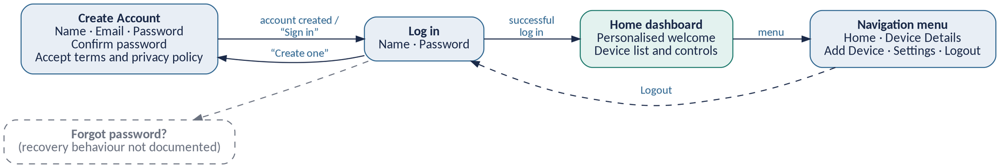
7.3 What Authentication Protects
Authentication controls access to the mobile application functions that operate the home: viewing devices, switching them, and creating schedules, timers and If-Then rules. After a successful login the user reaches a personalised home screen listing the devices.
7.4 Successful and Unsuccessful Authentication
Successful authentication. The user is taken to the home screen and addressed by name (Figure 14).
Unsuccessful authentication. The response of the application to invalid credentials is not documented in the available screens or in the workflow; test case TC-11 (Section 8.4) is defined for it.
7.5 Data Identification and Local Access
Each board is identified in the database by a unique 18-character identifier (Section 4.5.1), which makes identifiers impractical to guess.
Local control through the LCD display and push buttons is a physical-access function that works without the network.
7.6 Limitations
This report does not document additional measures such as encryption of communication or advanced protection features. Such measures are listed as future work in Section 9.2.
SUMMARY
Chapter 7 showed that security in HASS rests on account-based authentication in the mobile application, on the organisation of data in the database around unique board identifiers, and on the electrical protection described in Section 4.6. The mobile application is the only interface for which an authentication workflow is documented. Table 16 and Figure 20 summarised the functions available: creating an account, logging in, a forgotten-password link, the account profile and logging out.
Authentication controls access to viewing devices, switching them and creating schedules, timers and If-Then rules, and a successful login leads to a personalised home screen. Board identifiers are 18 characters long and are impractical to guess, while local control through the LCD display and push buttons is a physical-access function that works without the network. The chapter also stated that the book does not document additional measures such as encryption of communication, which are listed as future work. Chapter 8 presents the tests of the system, including the test cases defined for authentication.
08Testing and Results
INTRODUCTION
This chapter reports how HASS was evaluated and what evidence is available. It describes the five categories of test applied to the system and presents the results recorded by the team for connected operation.
It then defines the test cases for loss and restoration of Internet connectivity, for the ACS712 current sensor and for authentication. These test cases specify the scenario and the expected result, but their outcomes have not yet been recorded. The chapter concludes with a discussion of the recorded results and of the limitations of the evaluation.
8.1 Test Methodology
The system was evaluated with five categories of test:
- Device control test: verify that devices can be turned on and off manually.
- Response time test: measure the delay between a user command and the device action.
- Connectivity test: verify Wi-Fi stability during operation.
- User interface test: evaluate the usability of the mobile application and the local interface (LCD and push buttons).
- Automation test: validate the scheduled and conditional control features.
8.2 Recorded Results
Table 17 gives the results recorded by the team for connected operation. The connectivity result refers to Wi-Fi communication.
Table 17: Recorded system test results (connected operation).
| Test | Description | Observations | Status |
|---|---|---|---|
| Device control | Turning devices ON/OFF | All devices (air conditioner, lights, fan) responded correctly; relays activated as expected; no unintended switching. | Pass |
| Response time | Time from command to device action | Average 1.2–1.8 seconds; slight delay under weak Wi-Fi; system remained responsive during continuous operation. | Pass |
| Connectivity | Stability of Wi-Fi communication | Wi-Fi stable throughout the tests; minor delays under weak signal; no disconnections. | Pass |
| User interface | Usability of the mobile application and of the local LCD and push-button interface | Interfaces intuitive and responsive; real-time feedback displayed; LED indicators reflected device status. | Pass |
| Automation and scheduling | Scheduled and conditional actions | Scheduled tasks executed correctly (for example lights OFF at 11:00 PM); conditional actions (air conditioner ON above 30 °C) performed as intended. | Pass |
8.3 Connectivity-Loss Test Cases
The recorded tests covered connected operation. Table 18 defines the test cases for Internet availability, Internet loss and restoration. In these test cases, loss of the Internet means the loss of all network or Internet connectivity, that is, neither Ethernet nor Wi-Fi provides a connection; the loss of the Ethernet connection alone, with automatic fallback to Wi-Fi, is not covered by them.
Table 18: Test cases for Internet availability, disconnection and restoration.
| ID | Scenario | Procedure | Expected result | Result |
|---|---|---|---|---|
| TC-01 | Internet available | Switch a device from the application; run a schedule, a timer and an If-Then rule; observe the LCD display. | Commands are executed; automations run as configured; states agree on the application and the LCD display. | |
| TC-02 | Internet lost: manual control | Disconnect the Internet; switch devices with the push buttons. | Relays switch and the LCD shows the new state; local manual control remains available. | |
| TC-03 | Internet lost: schedule | Create a schedule, then disconnect before it is due. | The schedule is not executed while connectivity is lost. | |
| TC-04 | Internet lost: timer | Start a timer, then disconnect. | The timer function stops while connectivity is lost. | |
| TC-05 | Internet lost: If-Then | Create a temperature rule, disconnect, then meet the condition. | The rule is not executed while connectivity is lost. | |
| TC-06 | Internet lost: remote control | Send a command from the application while the board is offline. | The command is not executed by the device. | |
| TC-07 | Connectivity restored | Restore the Internet connection. | The system returns to connected operation; remote control and automation functions are available again. |
8.4 ACS712 and Authentication Test Cases
Table 19: Test cases for the ACS712 sensor and authentication.
| ID | Scenario | Expected result | Result |
|---|---|---|---|
| TC-08 | ACS712 reading with the load OFF and ON | The measured current changes with the load and agrees with a reference instrument. | |
| TC-09 | Create an account with valid data | The account is created and the user can log in. | |
| TC-10 | Log in with valid credentials | The home screen is displayed. | |
| TC-11 | Log in with invalid credentials | ||
| TC-12 | Log out from the navigation menu | The user returns to the login screen. |
8.5 Discussion
- The system provided reliable real-time control of the appliances; all devices responded correctly to commands.
- The ESP32 processed commands quickly, with an average response time of 1.2–1.8 seconds.
- Manual and automated operation worked as intended in connected operation, including scheduled tasks and temperature-based actions.
- The user interface was found intuitive and responsive, and the LED indicators gave clear feedback.
Limitations.
- Remote control and the automation functions depend on network availability; during a complete loss of network or Internet connectivity only local manual control through the LCD display and push buttons is available.
- Response time degrades slightly under weak signal conditions.
- Advanced security measures such as encryption are not documented.
- The offline, ACS712 and authentication test cases of Sections 8.3 and 8.4 have not yet been recorded.
- Ethernet connectivity with automatic fallback to Wi-Fi and the AI-assisted analysis are not covered by the recorded tests, and no measured energy savings are reported.
SUMMARY
Chapter 8 set out five categories of test: device control, response time, connectivity, user interface and automation. For connected operation the team recorded a pass in each category, with correct response of the air conditioner, lights and fan, an average response time of 1.2 to 1.8 seconds with a slight delay under weak Wi-Fi, stable Wi-Fi communication, an intuitive and responsive interface, and correct execution of scheduled and conditional actions.
The chapter also defined test cases TC-01 to TC-07 for Internet availability, loss and restoration, and TC-08 to TC-12 for the ACS712 sensor and for authentication; no results are recorded for them yet. The discussion identified the dependence of remote control and automation on network availability, the slight loss of response speed under weak signal, the absence of documented advanced security measures such as encryption, the absence of recorded tests for the Ethernet fallback and the AI-assisted analysis, and the pending test cases as limitations of the present evidence. Chapter 9 concludes the book on this basis.
09Conclusion and Future Work
INTRODUCTION
This chapter concludes the book. It draws together what the project developed and what the recorded tests showed, and it proposes enhancements that could extend the system in future work. The proposed enhancements are not part of the current implementation.
9.1 Conclusion
This project developed a smart home control system that unifies lighting and appliances under one platform. A Flutter mobile application with account-based access communicates through a Firebase Realtime Database with an ESP32 microcontroller, which switches 10 A and 30 A relay modules protected by dedicated fuses, reads a DHT22 temperature and humidity sensor and four ACS712 current sensors. A 20×4 I2C LCD display and two push buttons connected to the ESP32 provide local manual control. The ESP32 uses Ethernet when it is available and falls back automatically to Wi-Fi when the Ethernet connection is unavailable. An AI-assisted analysis, implemented as a Python script, examines the available usage and electricity-consumption data to identify potential energy waste and to provide recommendations for reducing unnecessary electricity consumption.
The system offers remote control, weekly schedules, timers and temperature-based If-Then rules while connected. When all network or Internet connectivity is lost, manual control through the push buttons remains available, while the cloud-dependent automation functions are unavailable until connectivity is restored. Recorded tests of connected operation showed correct device control, an average response time of 1.2–1.8 seconds, stable connectivity, a responsive interface and correct automation. The recorded tests did not cover the Ethernet fallback or the AI-assisted analysis. Further testing is required to validate the ACS712 measurement accuracy, the Ethernet fallback and the energy-saving potential of the AI-assisted recommendations.
The project addresses the problems identified at the outset (energy waste, accessibility limits, the complexity of managing several devices, and safety risks) and provides a basis for further development toward a complete product.
9.2 Future Work
The following enhancements are proposed. None of them is part of the current implementation.
- Voice assistant integration. Hands-free control through assistants such as Siri, Google Assistant and Amazon Alexa.
- Expansion of smart device support. Additional appliances such as smart curtains, door locks, irrigation systems and kitchen appliances, using the modular architecture.
- Intelligent speed control. Environmental sensors (temperature, humidity, occupancy) to regulate fan or motor speed automatically.
- Advanced security enhancements. Motion and smoke detection, camera monitoring, real-time alert notifications on the mobile device, and further measures such as encryption.
- Extended cloud data management. Historical data analysis, performance tracking and system backup.
- Renewable energy integration. Solar energy monitoring and automatic switching between grid and renewable sources.
SUMMARY
Chapter 9 concluded that the project developed a smart home control system in which a Flutter mobile application communicates through a Firebase Realtime Database with an ESP32 that switches 10 A and 30 A relay modules, reads a DHT22 sensor and four ACS712 current sensors, with an LCD display and two push buttons providing local manual control. The ESP32 uses Ethernet when available and falls back automatically to Wi-Fi, and a Python-based AI analysis provides recommendations for reducing unnecessary electricity consumption. The system offers remote control, weekly schedules, timers and temperature-based If-Then rules while connected, and only manual control with the push buttons while all network or Internet connectivity is lost. The recorded tests of connected operation were reported as passed, with an average response time of 1.2 to 1.8 seconds. The Ethernet fallback and the AI-assisted analysis were not covered by the recorded tests.
Six directions were proposed for future work: voice assistant integration, expansion of smart device support, intelligent speed control, advanced security enhancements, extended cloud data management and renewable energy integration. None of them is part of the current implementation. Taken together, the book documents the design, implementation status and evaluation of HASS and identifies the further development that would be needed toward a complete product.
RReferences
[1] “Final project report – smart home,” Scribd. [Online]. Available: https://www.scribd.com/document/677511619/final-project-report-smart-home
[2] “Project report on smart home automation system,” ResearchGate. [Online]. Available: https://www.researchgate.net/publication/385800848_PROJECT_REPORT_on_SMART_HOME_AUTOMATION_SYSTEM
[3] “Smart home systems,” Erasmus+ project result. [Online]. Available: https://ec.europa.eu/programmes/erasmus-plus/project-result-content/4df4e928-8958-4552-80da-146977e666b9/Smart_Home_systems_FINAL.pdf
[4] Dissertation, Universiti Teknologi PETRONAS institutional repository. [Online]. Available: https://utpedia.utp.edu.my/id/eprint/17096/1/DESSERTATION_16447.pdf
[5] Espressif Systems, “ESP32-DevKitC pin layout,” as reproduced in Appendix B.
[6] SONOFF, “SONOFF POWR3 high power smart switch.” [Online]. Available: https://sonoff.tech/products/sonoff-powr3-high-power-smart-switch (accessed Oct. 9, 2026).
[7] Shelly, “Shelly Pro 2PM V1,” product documentation. [Online]. Available: https://www.shelly.com/blogs/documentation/shelly-pro-2pm-v1 (accessed Oct. 9, 2026).
[8] SONOFF, “SONOFF POW Elite smart power meter switch (POWR316D/POWR320D).” [Online]. Available: https://sonoff.tech/products/sonoff-pow-elite-smart-power-meter-switch (accessed Oct. 9, 2026).
[9] TOMZN, “63A WiFi smart circuit breaker with energy metering,” Xmart product listing. [Online]. Available: https://www.xmart.jo/en/products/tomzn-63a-wifi-smart-circuit-breaker-with-energy-metering (accessed Oct. 9, 2026).
[10] Espressif Systems, “ESP32 series datasheet.” [Online]. Available: https://www.espressif.com/sites/default/files/documentation/esp32_datasheet_en.pdf.
[11] WIZnet, “W5500,” product documentation. [Online]. Available: https://docs.wiznet.io/Product/Chip/Ethernet/W5500.
[12] Allegro MicroSystems, “ACS712 datasheet.” [Online]. Available: https://www.allegromicro.com/-/media/files/datasheets/acs712-datasheet.ashx.
[13] Google, “Firebase Realtime Database,” Firebase documentation. [Online]. Available: https://firebase.google.com/docs/database.
AProject Timeline
Table 20 shows the project plan from 13 February to 17 April. Each column is a week, labelled with its starting date.
Table 20: Project timeline.
| Task | W1 13/02 | W2 20/02 | W3 27/02 | W4 06/03 | W5 13/03 | W6 20/03 | W7 27/03 | W8 03/04 | W9 10/04 | W10 17/04 |
|---|---|---|---|---|---|---|---|---|---|---|
| 1. Research the project idea | ||||||||||
| 2. Buy the components | ||||||||||
| 3. Hardware connections | ||||||||||
| 4. UI-UX design (mobile and screen) | ||||||||||
| 5. Mobile application development | ||||||||||
| 6. Smart TFT work | ||||||||||
| 7. Backend work (Firebase / server) | ||||||||||
| 8. Diagrams (system, architecture, flowchart) | ||||||||||
| 9. Marketing plan | ||||||||||
| 10. Business plan | ||||||||||
| 11. Manual and user guide | ||||||||||
| 12. Final documentation |
■ Completed ■ In progress / partial ■ Planned
BESP32 Pin Reference
Figure 21 reproduces the ESP32-DevKitC pin layout [5] used to assign the GPIO pins of Table 10.
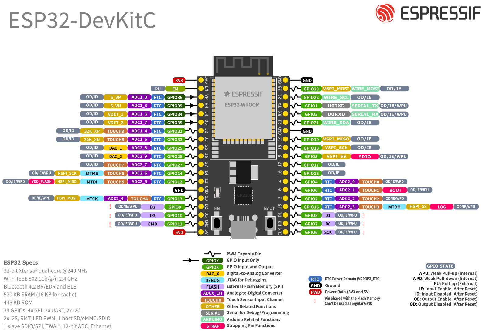